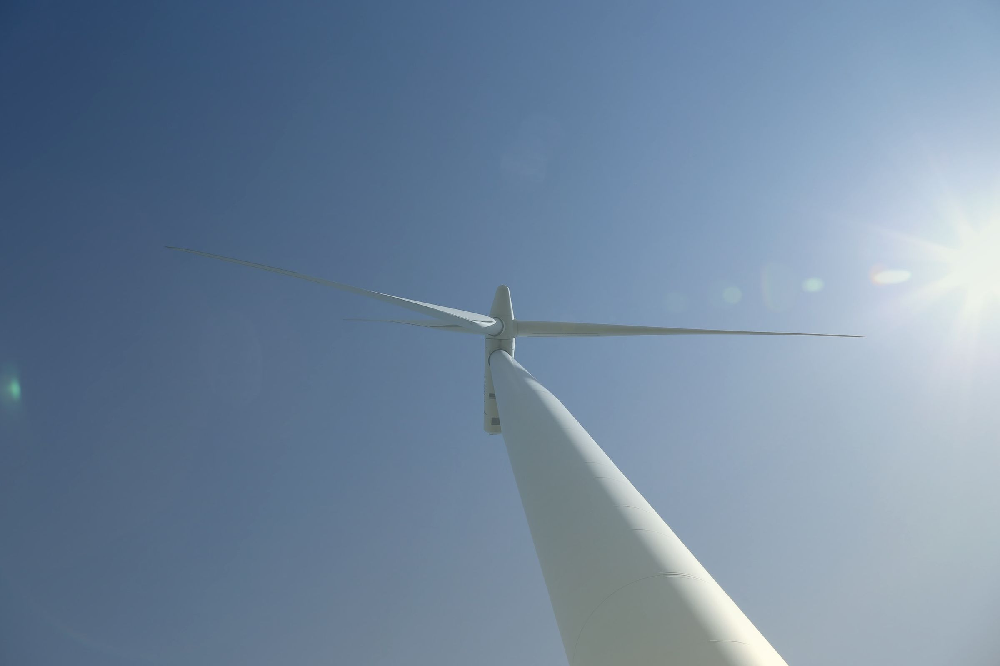
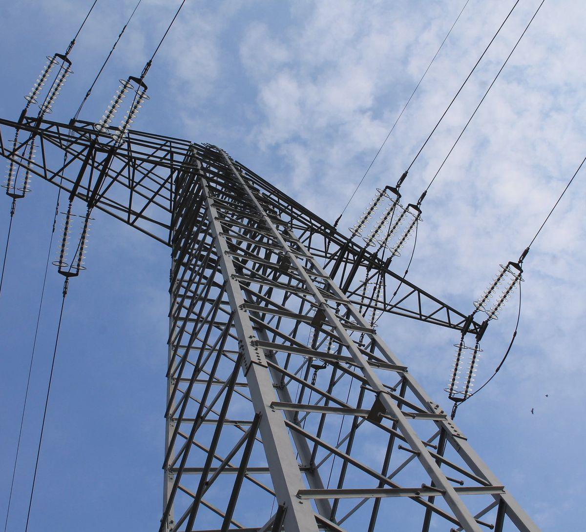
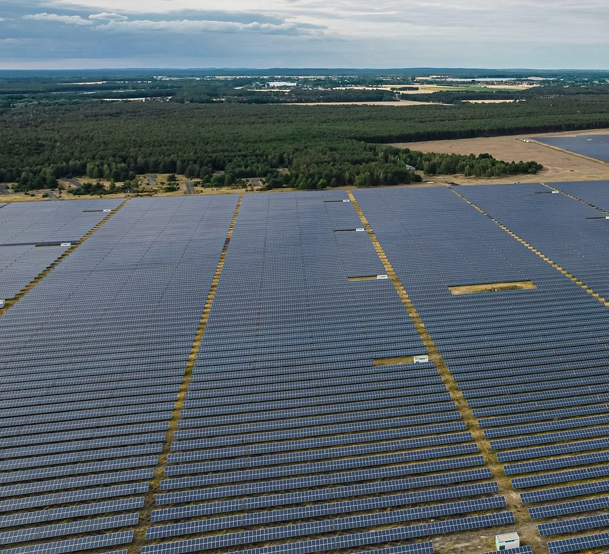
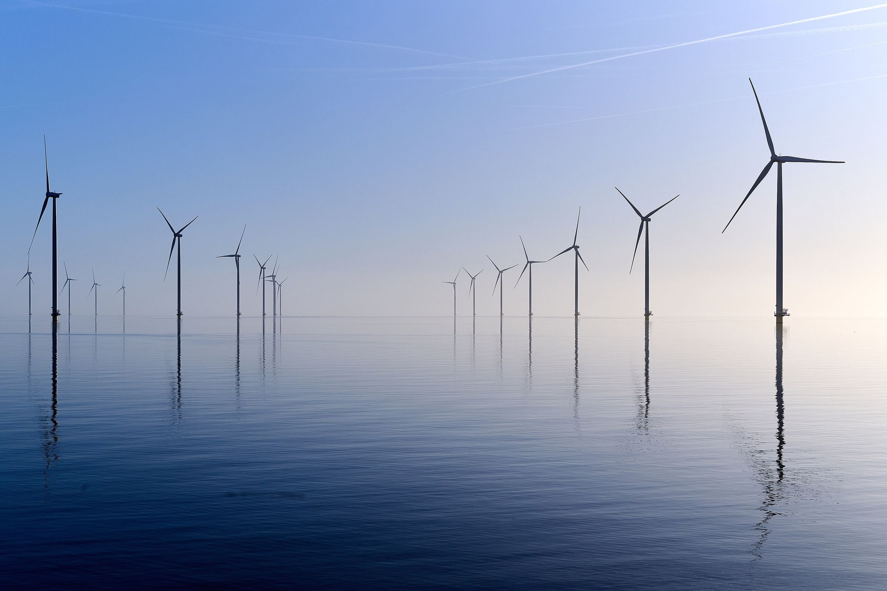

Publicaties
Geen publicaties voor deze filters. Kies een langere periode of een andere bron.

Publicaties en rechtsbronnen van ACM, ACER, de Europese Commissie, CEER, de Rijksoverheid, het CBb, de civiele rechter en het Hof van Justitie van de EU. Elke ochtend bijgewerkt.
Geen publicaties voor deze filters. Kies een langere periode of een andere bron.
De bronnen die de databank elke ochtend doorzoekt, met vaste links naar wet- en regelgeving en besluiten.
Uitspraken van het College van Beroep voor het bedrijfsleven, de civiele rechter en het Hof van Justitie van de EU. Daarnaast besluiten en publicaties van de ACM, ACER, CEER en de Europese Commissie.


Per bron vaste links naar de Energiewet, de Elektriciteitswet 1998, de Gaswet, de netcodes en de Europese verordeningen en richtlijnen.
